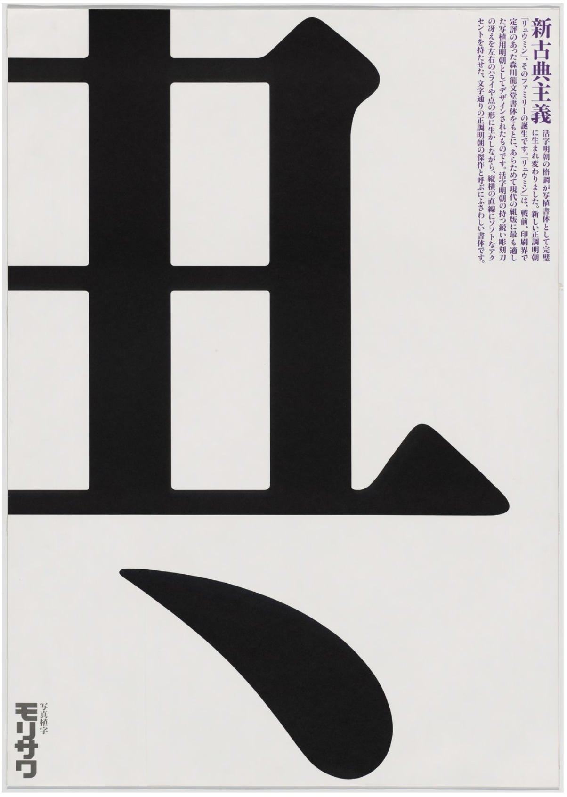

The Chinese Garden, 1742
Francois Boucher
- Original Title: Le Jardin Chinois
- Style: Rococo
- Genre: genre painting
- Location: Hermitage Museum, Saint Petersburg, Russia

The Swing, c. 1767 - 1768
Jean-Honoré Fragonard
- Collection: Painting
- Origin: France
- Dimensions: 81 x 64.2 cm
- Gallery: Great Gallery
Fragonard’s iconic painting is one of the most emblematic images of 18th-century French art. A young woman wearing a lovely pink silk frock is tantalisingly positioned mid-air on a swing between her elderly husband on the right and her young lover on the left. The force of the swing caused one of her slippers to fly off, resulting in a privileged view for her lover whose delight is suggested by the symbolic offer of his hat.

Morisawa & Co, 1986
Ikko Tanaka
- Medium: Offset lithograph
- Dimensions: 40 3/8 x 28 5/8" ( 102.5 x 72.7 cm)
- Credit: Gift of the designer
- Location: MoMA